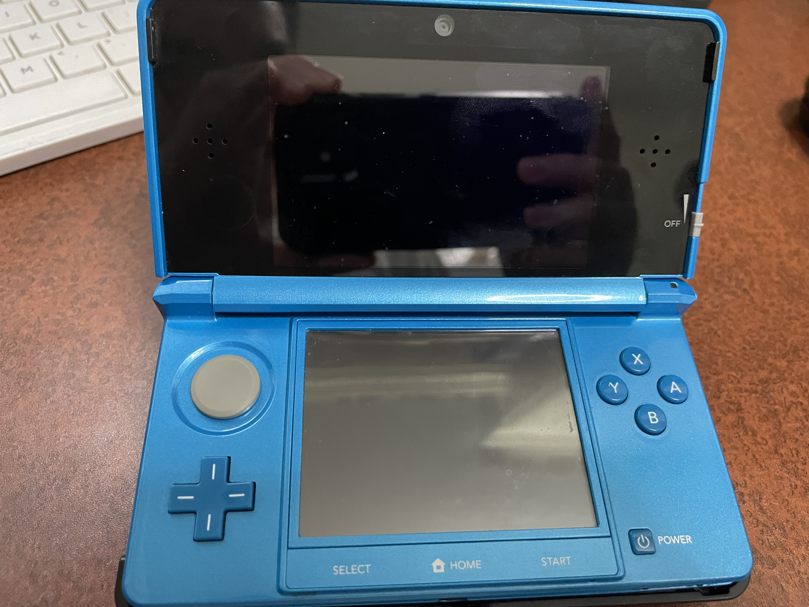
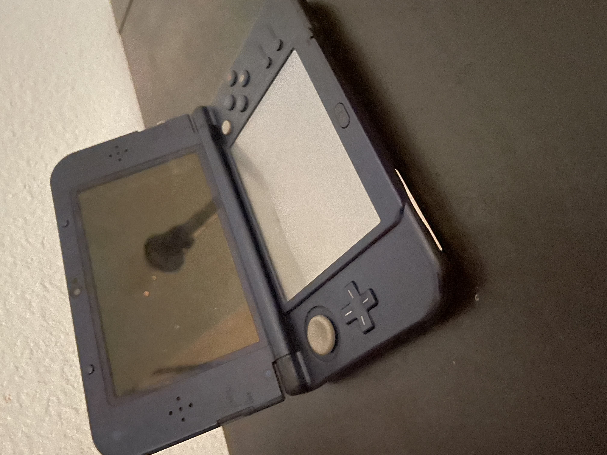

The Nintendo 3DS is a game console first released in 2011. The Nintendo 3DS released at a launch price of $249.99, but it was lowered to a price of $169.99 ($341.22 and $232.02 2023 USD respectively). It is backwards compatible with DS Game Cards and DSi Game Cards (the latter being region locked). The 3DS also has an eShop, which was used to download almost all 3DS retail games, but it was also used to download eShop-exclusive games and Virtual Console titles, which includes NES, SNES, GB, GBC, and Game Gear games.
The New 3DS has a more powerful processor than the original 3DS. It has some more features, such as a built-in NFC reader, a C-Stick that functions like a second analogue stick, and ZL/ZR shouler buttons. These additions cause some more features to be in certain games, such as opening the internet browser in SSB 3DS and built-in Amiibo support. There are also some games that run better on the New 3DS, such as Hyrule Warriors Legends. There are also some games that are built for the New Nintendo 3DS, such as SNES Virtual Console and Minecraft New Nintendo 3DS Edition.
